Universitas Ibnu Sina Ajibarang
Bersama Desa, Mewujudkan Cita
Desa Karangkemiri, Kecamatan Pekuncen, Kabupaten Banyumas
2026
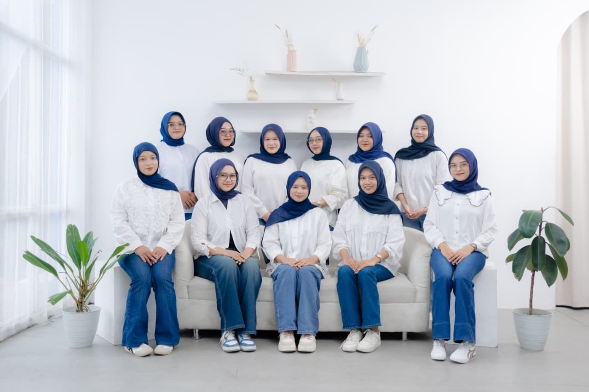
Kuliah Kerja Nyata (KKN) merupakan wujud nyata pengabdian mahasiswa kepada masyarakat melalui penerapan ilmu pengetahuan, kolaborasi, serta pemberdayaan masyarakat. Melalui kegiatan ini, mahasiswa tidak hanya mengimplementasikan ilmu yang diperoleh selama perkuliahan, tetapi juga berperan aktif dalam memberikan kontribusi nyata sesuai dengan potensi dan kebutuhan masyarakat. KKN Tematik Kelompok 02 Universitas Ibnu Sina Ajibarang melaksanakan pengabdian di Desa Karangkemiri, Kecamatan Pekuncen, Kabupaten Banyumas, dengan posko yang berlokasi di Dusun Kalibungur RT 04 RW 05 serta berfokus pada pelaksanaan program kerja di wilayah Dusun 4 yang terdiri dari enam RT.
Dalam pelaksanaan KKN Tahun 2026, Kelompok 02 mengusung tema DHARMAYASA, yang berasal dari dua kata, yaitu Dharma yang berarti pengabdian dan Yasa yang berarti karya. Tema ini menjadi landasan dan semangat kami dalam menghadirkan pengabdian yang diwujudkan melalui karya nyata bagi masyarakat. Setiap program kerja yang dirancang merupakan perwujudan nilai-nilai DHARMAYASA melalui kolaborasi, inovasi, dan pemberdayaan masyarakat sesuai dengan potensi serta kebutuhan Desa Karangkemiri.
Website ini hadir sebagai media informasi dan dokumentasi yang memuat profil lokasi KKN, tema pengabdian, program kerja, serta berbagai kegiatan yang telah dilaksanakan selama masa KKN. Melalui website ini, kami berharap masyarakat dan para pengunjung dapat mengenal lebih dekat Desa Karangkemiri, memahami tujuan serta pelaksanaan program kerja yang kami lakukan, dan melihat berbagai upaya pengabdian yang telah diwujudkan bersama masyarakat. Dengan semangat DHARMAYASA, kami berkomitmen untuk memberikan kontribusi yang bermanfaat, mendukung potensi lokal, serta menciptakan dampak positif yang berkelanjutan bagi masyarakat Desa Karangkemiri.
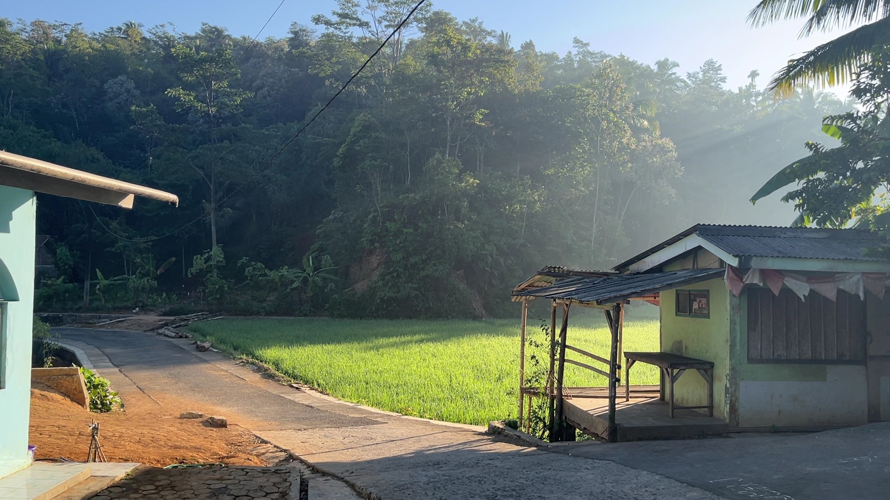
Desa Karangkemiri merupakan salah satu desa yang berada di Kecamatan Pekuncen, Kabupaten Banyumas, Provinsi Jawa Tengah. Desa ini memiliki lingkungan yang asri dengan kehidupan masyarakat yang masih menjunjung tinggi nilai kebersamaan, gotong royong, dan kepedulian sosial. Beragam potensi yang dimiliki, baik dari sumber daya alam maupun sumber daya manusia, menjadi modal penting dalam mendukung pembangunan dan pemberdayaan masyarakat.
KKN Tematik Kelompok 02 Universitas Ibnu Sina Ajibarang melaksanakan pengabdian di Desa Karangkemiri dengan posko yang berlokasi di Dusun Kalibungur RT 04 RW 05. Fokus pelaksanaan program kerja berada di wilayah Dusun 4 yang terdiri dari enam RT. Melalui hasil observasi dan koordinasi bersama pemerintah desa serta masyarakat, berbagai program kerja disusun untuk menjawab kebutuhan masyarakat sekaligus mengoptimalkan potensi yang dimiliki desa.
Dengan semangat DHARMAYASA, setiap kegiatan yang dilaksanakan diharapkan tidak hanya memberikan manfaat selama masa KKN berlangsung, tetapi juga mampu memperkuat kolaborasi antara mahasiswa dan masyarakat serta menciptakan dampak positif yang berkelanjutan bagi Desa Karangkemiri.
Desa Karangkemiri, Kecamatan Pekuncen, Kabupaten Banyumas, Jawa Tengah.
Dusun Kalibungur RT 04 RW 05.
Dusun 4 yang terdiri dari 6 RT.
Memiliki potensi di bidang pertanian, perkebunan, serta sumber daya masyarakat yang aktif dan produktif.
Masyarakat menjunjung tinggi semangat gotong royong, kebersamaan, dan partisipasi dalam kegiatan desa.
DHARMAYASA – Pengabdian yang menghasilkan karya nyata bagi masyarakat.
Berikut merupakan denah lokasi Desa Karangkemiri serta lokasi Posko KKN Tematik Kelompok 02 Universitas Ibnu Sina Ajibarang yang berada di Dusun Kalibungur RT 04 RW 05. Peta ini bertujuan untuk memudahkan masyarakat maupun pengunjung dalam mengenali lokasi pelaksanaan kegiatan KKN.
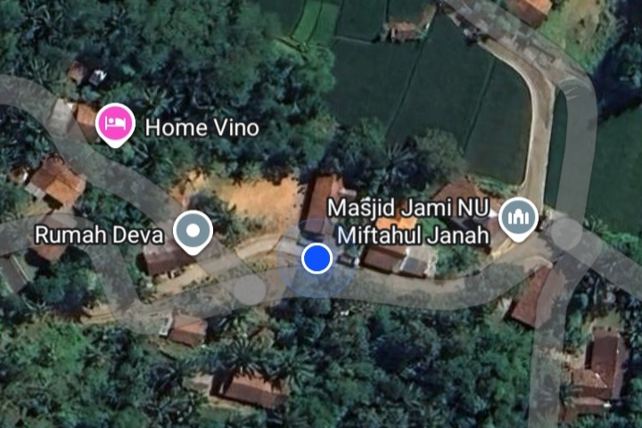
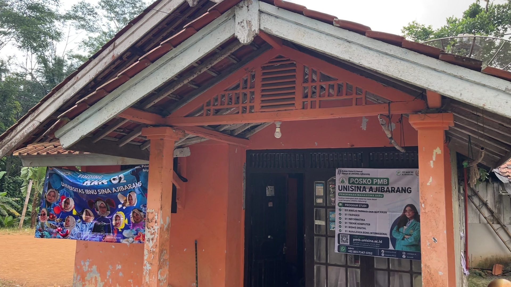
Dusun Kalibungur merupakan wilayah pengabdian KKN Tematik Kelompok 02 Universitas Ibnu Sina Ajibarang yang terdiri atas enam RT. Berdasarkan hasil observasi dan koordinasi bersama masyarakat, dusun ini memiliki berbagai potensi yang menjadi dasar penyusunan program kerja KKN. Potensi tersebut mencerminkan kekuatan lokal yang dapat dikembangkan melalui kolaborasi, pemberdayaan, dan partisipasi aktif masyarakat sesuai dengan semangat DHARMAYASA.
Sektor pertanian menjadi salah satu mata pencaharian utama masyarakat dan memiliki peran penting dalam menunjang perekonomian warga.
Selain pertanian, masyarakat juga memanfaatkan lahan perkebunan sebagai sumber penghasilan yang mendukung kesejahteraan keluarga.
Pengolahan gula jawa merupakan salah satu potensi ekonomi lokal yang masih dilestarikan dan menjadi sumber mata pencaharian bagi sebagian masyarakat.
Semangat gotong royong masih terjaga dengan baik, terlihat dari partisipasi aktif masyarakat dalam berbagai kegiatan kemasyarakatan dan pembangunan lingkungan.
Masyarakat memiliki hubungan sosial yang erat, menjunjung tinggi kebersamaan, serta terbuka terhadap kegiatan yang bersifat edukatif, sosial, dan pemberdayaan.
Program ECOPAYA dilaksanakan pada Jumat, 7 Agustus 2026 pukul 19.30 WIB hingga selesai di TPQ Miftahul Jannah, Dusun 4 Kalibungur, Desa Karangkemiri. Kegiatan ini bertujuan untuk mengenalkan pemanfaatan daun pepaya sebagai bahan pestisida nabati yang dapat digunakan untuk membantu mengendalikan hama pada tanaman. Edukasi diberikan kepada masyarakat mengenai potensi bahan alami yang mudah ditemukan di lingkungan sekitar serta pemanfaatannya secara tepat.
Kegiatan dilanjutkan dengan praktik pembuatan ECOPAYA yang meliputi persiapan dan pembersihan bahan, pemotongan atau penghancuran daun pepaya, perendaman atau ekstraksi, penyaringan larutan, hingga pengemasan dalam wadah yang sesuai. Masyarakat juga mendapatkan pendampingan mengenai kebersihan alat dan bahan, takaran, penyimpanan, serta cara penggunaan ECOPAYA pada tanaman. Melalui kegiatan ini, masyarakat diharapkan dapat memanfaatkan potensi lingkungan sekitar secara lebih optimal dan mengembangkan pengetahuan praktis yang mendukung pertanian yang lebih ramah lingkungan.
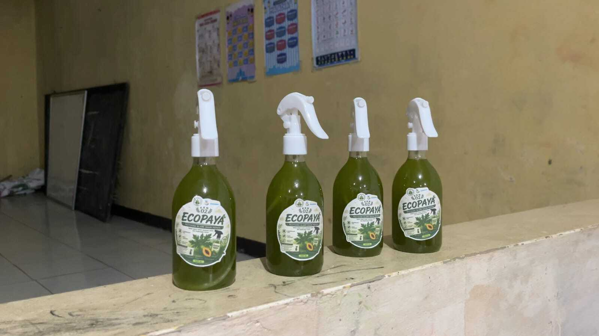
Sebagai upaya meningkatkan pengetahuan dan kesiapsiagaan masyarakat dalam bidang kesehatan dan keselamatan, KKN Tematik Kelompok 02 Universitas Ibnu Sina Ajibarang menyelenggarakan program Cerdas Obat, Sigap Darurat pada 2 Agustus 2026 di Dusun Kalibungur, Desa Karangkemiri. Kegiatan yang dilaksanakan setelah salat Isya ini ditujukan bagi masyarakat Dusun 4 dan menghadirkan narasumber dari Balai Besar Pengawas Obat dan Makanan (BBPOM) serta Pemadam Kebakaran Sektor Wangon, Kabupaten Banyumas.
Melalui penyuluhan ini, masyarakat memperoleh edukasi mengenai penggunaan obat yang benar, aman, dan rasional, sekaligus mendapatkan pembekalan tentang penanganan keadaan darurat serta langkah-langkah pencegahan dan penanggulangan kebakaran. Program ini diharapkan dapat meningkatkan kesadaran, pengetahuan, dan kesiapsiagaan masyarakat dalam menghadapi berbagai situasi, sehingga mampu menciptakan lingkungan yang lebih sehat, aman, dan tangguh sesuai dengan semangat DHARMAYASA.
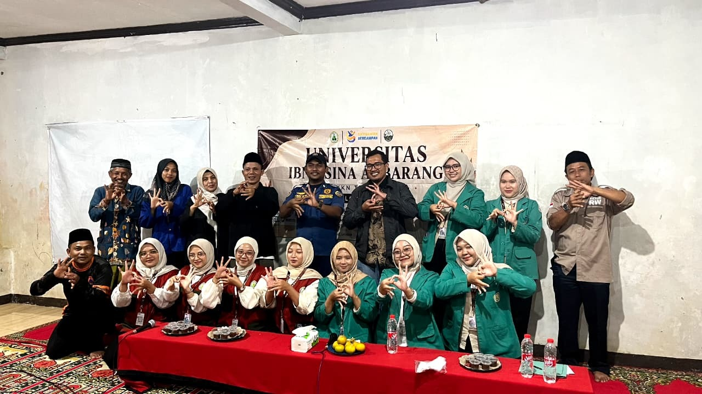
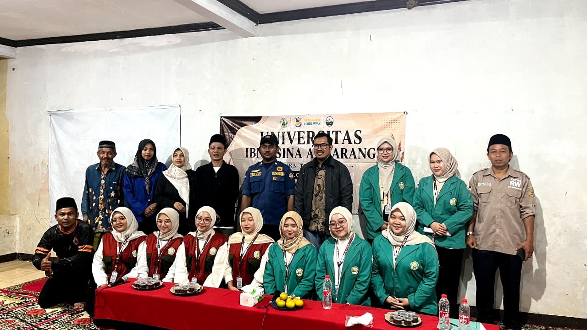
Sebagai upaya menumbuhkan kreativitas sekaligus memperkenalkan konsep sains kepada siswa sejak dini, KKN Tematik Kelompok 02 Universitas Ibnu Sina Ajibarang melaksanakan program Sains dan Batik Ceria pada 3 Agustus 2026 di SD Negeri 03 Karangkemiri dengan sasaran siswa kelas VI. Kegiatan ini menggabungkan unsur seni dan sains melalui aktivitas mewarnai motif batik menggunakan bahan alami. Larutan kunyit bubuk yang dicampurkan dengan air digunakan sebagai pewarna dasar sehingga menghasilkan warna kuning pada gambar batik. Selama kegiatan berlangsung, mahasiswa KKN turut mendampingi siswa dalam proses mewarnai serta memberikan penjelasan mengenai konsep ilmiah di balik perubahan warna yang terjadi.
Setelah pewarna dasar mengering, siswa mengoleskan larutan deterjen menggunakan cotton bud pada bagian tertentu sehingga warna kuning berubah menjadi merah kecokelatan. Perubahan warna tersebut terjadi karena kunyit mengandung senyawa kurkumin yang bersifat sebagai indikator alami. Kurkumin akan berubah warna ketika bereaksi dengan zat yang bersifat basa, seperti deterjen, sehingga menghasilkan warna merah kecokelatan. Melalui kegiatan ini, siswa tidak hanya mengembangkan kreativitas dalam membatik, tetapi juga memperoleh pengalaman belajar yang menyenangkan mengenai penerapan konsep sains dalam kehidupan sehari-hari, sejalan dengan semangat DHARMAYASA.
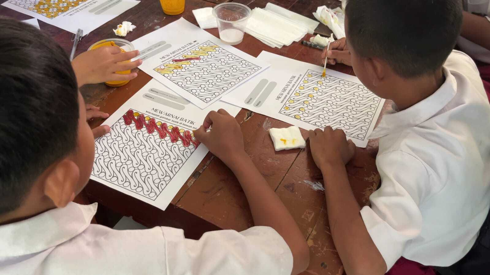
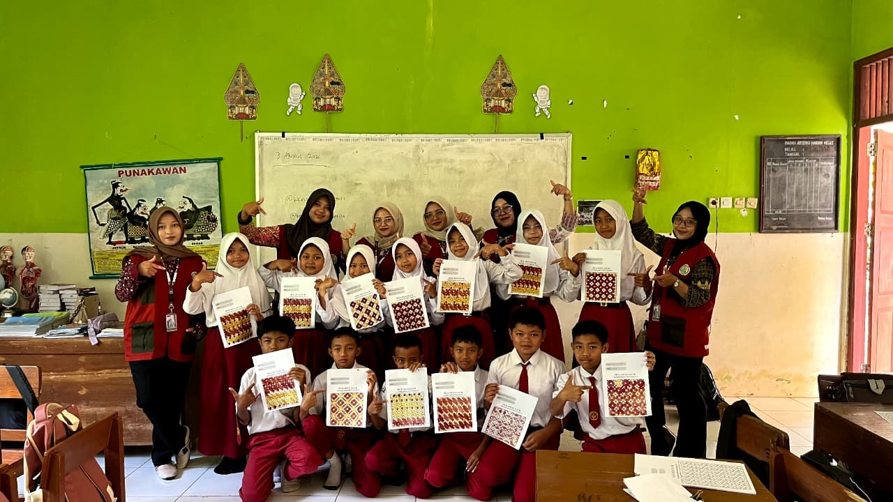
Sebagai upaya mendukung pembentukan karakter dan peningkatan pengetahuan keagamaan anak-anak, KKN Tematik Kelompok 02 Universitas Ibnu Sina Ajibarang melaksanakan program TPQ Ceria, yaitu kegiatan pendampingan belajar Taman Pendidikan Al-Qur'an (TPQ) yang dilaksanakan secara rutin setiap hari Rabu pukul 15.30 WIB di Dusun Kalibungur. Kegiatan ini dikemas secara interaktif melalui pembelajaran membaca dan mengaji Al-Qur'an, pendampingan belajar, serta permainan edukatif yang menciptakan suasana belajar yang menyenangkan dan penuh semangat.
Melalui program TPQ Ceria, diharapkan anak-anak dapat meningkatkan kemampuan membaca Al-Qur'an, memperdalam pemahaman nilai-nilai keagamaan, serta menumbuhkan semangat belajar dan rasa percaya diri. Program ini juga menjadi sarana untuk mempererat hubungan antara mahasiswa KKN dan masyarakat dalam mewujudkan pengabdian yang memberikan manfaat nyata, sejalan dengan semangat DHARMAYASA.
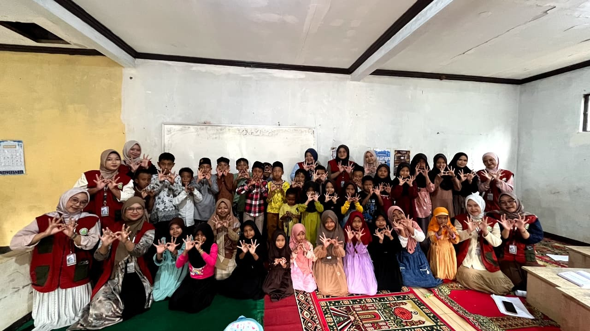
Sebagai upaya meningkatkan kepedulian terhadap kesehatan lansia, KKN Tematik Kelompok 02 Universitas Ibnu Sina Ajibarang melaksanakan program Lansia Sehat Berdaya (Home Visit) pada 5 Agustus 2026 di Dusun Kalibungur, Desa Karangkemiri. Kegiatan ini dilaksanakan melalui kunjungan langsung ke rumah-rumah lansia yang memiliki riwayat hipertensi di wilayah Dusun 4 (RT 01–RT 06), berdasarkan data Posyandu setempat. Dalam setiap kunjungan, mahasiswa KKN melakukan pemeriksaan tekanan darah, mendata identitas lansia meliputi nama, umur, alamat, hasil pemeriksaan tekanan darah, serta dokumentasi kehadiran sebagai bagian dari pemantauan kesehatan.
Selain pemeriksaan tekanan darah, lansia juga diberikan edukasi mengenai Beyond Use Date (BUD), yaitu batas waktu penggunaan obat setelah kemasan dibuka atau obat diracik, beserta pentingnya penyimpanan obat yang benar untuk menjaga mutu dan keamanannya. Sebagai media edukasi, setiap lansia menerima poster mengenai BUD yang dapat disimpan di rumah sebagai pengingat. Pada akhir kunjungan, tim KKN turut menyampaikan informasi mengenai kegiatan penyuluhan lanjutan tentang pembuatan jamu tradisional untuk membantu mengatasi hipertensi dan pegal linu. Melalui program ini, diharapkan kesadaran lansia terhadap pemantauan kesehatan dan penggunaan obat yang tepat semakin meningkat, sehingga mendukung terwujudnya masyarakat yang lebih sehat dan mandiri sesuai dengan semangat DHARMAYASA.
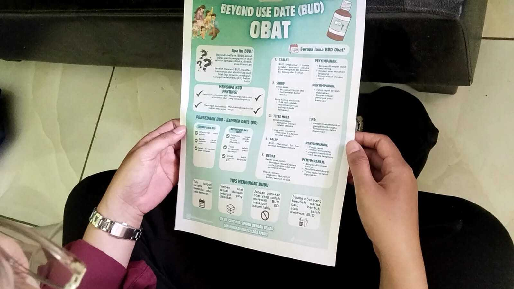
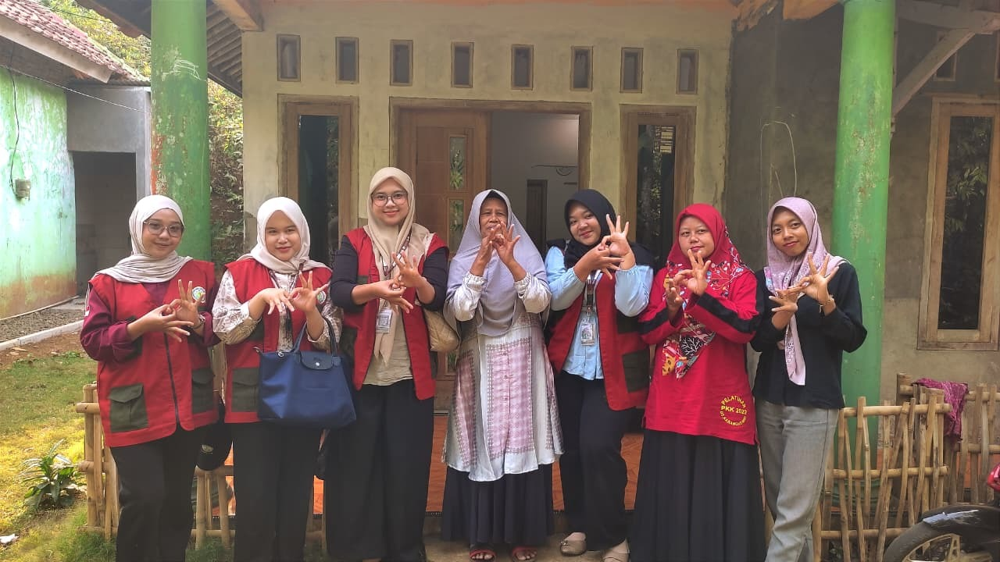
Sebagai upaya meningkatkan kesadaran akan pentingnya keamanan pangan di lingkungan sekolah, KKN Tematik Kelompok 02 Universitas Ibnu Sina Ajibarang melaksanakan program Kantin Sehat pada 30 Juli 2026 di SD Negeri 03 Karangkemiri. Program ini diwujudkan melalui pembuatan dan pemasangan pamflet edukatif di area kantin sekolah yang berisi informasi mengenai cara memilih pangan yang aman, pentingnya memperhatikan kemasan, label, tanggal kedaluwarsa, izin edar, serta mengenali ciri-ciri makanan dan minuman yang layak dikonsumsi.
Pamflet tersebut juga memberikan edukasi mengenai pentingnya menyediakan dan memilih jajanan yang aman bagi kesehatan, serta dampak yang dapat ditimbulkan apabila mengonsumsi atau memperjualbelikan produk pangan yang tidak memenuhi standar keamanan, seperti risiko gangguan kesehatan, keracunan pangan, hingga penurunan kualitas kesehatan anak. Melalui program ini, diharapkan siswa, pedagang kantin, dan warga sekolah semakin memahami pentingnya keamanan pangan sehingga dapat bersama-sama mewujudkan lingkungan kantin yang sehat, aman, dan mendukung tumbuh kembang peserta didik sesuai dengan semangat DHARMAYASA.
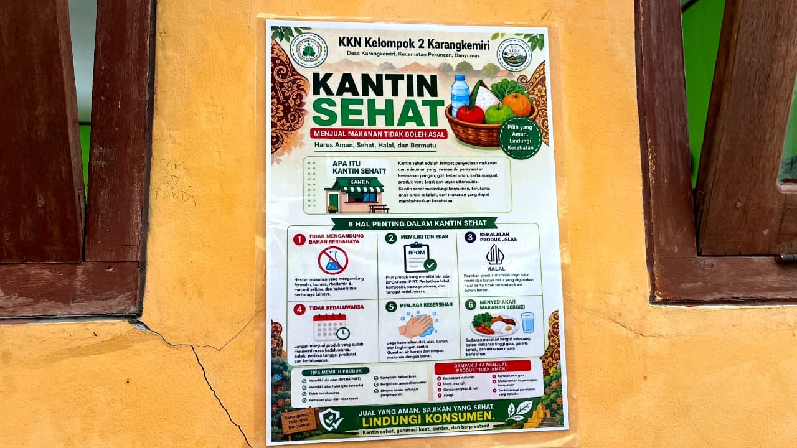
Sebagai bentuk kepedulian terhadap kebersihan dan kenyamanan lingkungan pendidikan keagamaan, KKN Tematik Kelompok 02 Universitas Ibnu Sina Ajibarang melaksanakan program Menjaga Kebersihan TPQ pada 2 Agustus 2026 di TPQ Miftahul Jannah, Dusun Kalibungur. Program ini diwujudkan melalui pembuatan dan penyediaan tempat sampah sebagai fasilitas pendukung untuk menjaga kebersihan lingkungan TPQ.
Selain menyediakan fasilitas kebersihan, kegiatan ini juga menjadi upaya untuk menanamkan kebiasaan hidup bersih kepada anak-anak sejak dini. Melalui keberadaan tempat sampah dan pembiasaan membuang sampah pada tempatnya, diharapkan tercipta lingkungan TPQ yang lebih bersih, nyaman, dan sehat. Program ini sekaligus mengajarkan bahwa menjaga kebersihan merupakan tanggung jawab bersama yang perlu dilakukan secara konsisten dan berkelanjutan, sejalan dengan semangat DHARMAYASA.
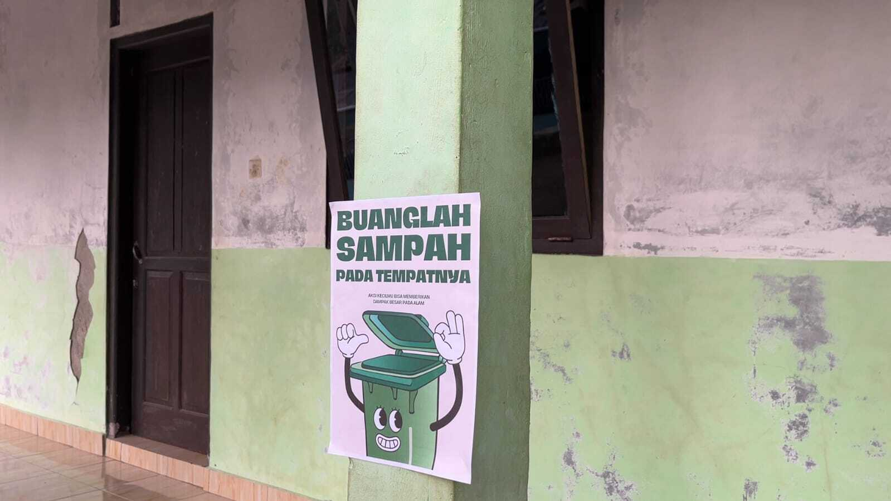
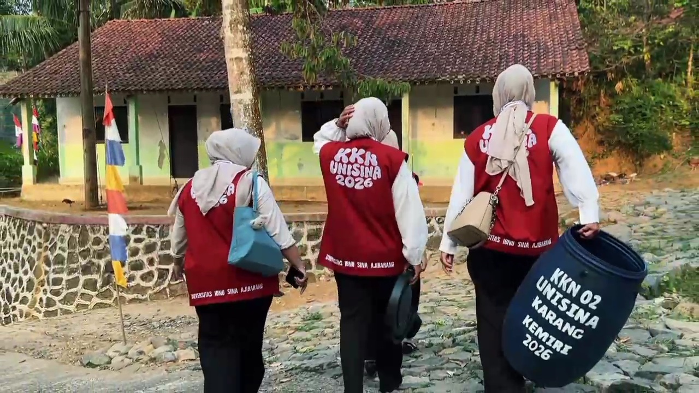
Sebagai upaya mendukung tumbuh kembang dan stimulasi kemampuan motorik balita, KKN Tematik Kelompok 02 Universitas Ibnu Sina Ajibarang melaksanakan program Bermain Ceria (Motorik) pada Jumat, 7 Agustus 2026 di Dusun Kalibungur. Kegiatan dikemas melalui permainan edukatif yang menyenangkan, salah satunya dengan mengajak balita memasukkan bola ke dalam lubang sesuai dengan warna yang telah ditentukan. Selain itu, balita juga diajak melatih koordinasi gerak melalui permainan menggoyangkan kardus menggunakan tangan hingga bola dapat keluar melalui lubang yang tersedia.
Selain kegiatan bermain, mahasiswa KKN turut melakukan pendataan terkait pertumbuhan dan perkembangan balita sebagai bagian dari pemantauan kondisi tumbuh kembang anak. Melalui program ini, diharapkan balita memperoleh stimulasi yang sesuai melalui aktivitas bermain sekaligus membantu orang tua dan kader dalam memantau perkembangan anak. Kegiatan ini menjadi salah satu bentuk edukasi dan pendampingan yang menggabungkan unsur bermain, belajar, serta pemantauan tumbuh kembang secara menyenangkan dan interaktif.
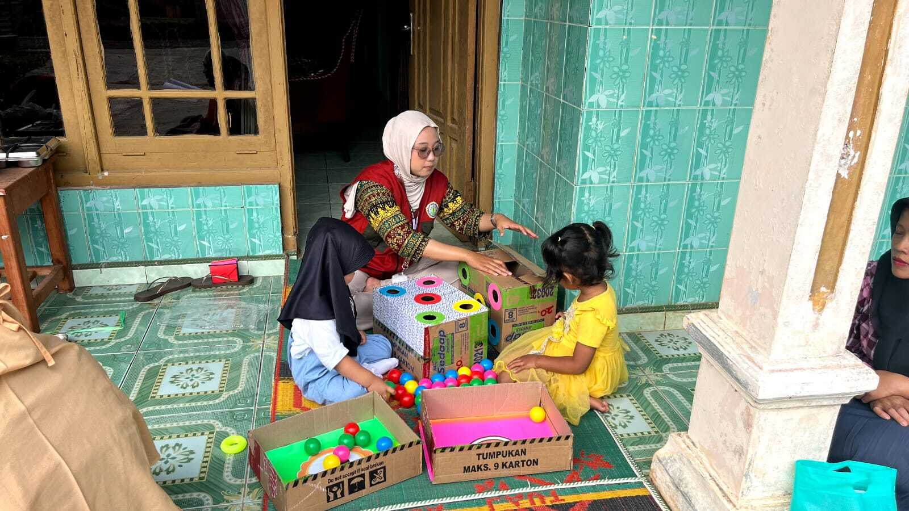
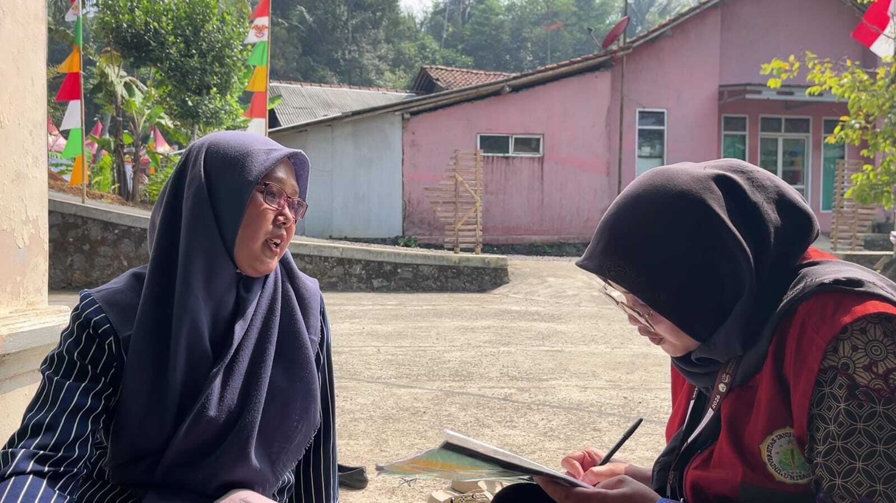
Sebagai upaya mengenali, melestarikan, dan mengembangkan potensi lokal, KKN Tematik Kelompok 02 Universitas Ibnu Sina Ajibarang melaksanakan program Jejak Budaya Desa pada 7 Agustus 2026 di Dusun Kalibungur, Desa Karangkemiri. Kegiatan diawali dengan edukasi dan praktik pembuatan pestisida nabati berbahan dasar daun pepaya bersama masyarakat, khususnya bapak-bapak di Dusun 4. Melalui kegiatan ini, masyarakat diperkenalkan pada pemanfaatan bahan alami yang mudah ditemukan di lingkungan sekitar sebagai salah satu alternatif dalam membantu mengendalikan hama tanaman.
Selain kegiatan praktik, program ini juga menjadi ruang untuk mengenal dan mendokumentasikan sejarah serta nilai-nilai yang berkembang di Dusun Kalibungur. Mahasiswa KKN berdiskusi dan mendengarkan cerita mengenai sejarah Dusun Kalibungur dan Desa Karangkemiri dari berbagai pihak yang memiliki pengetahuan serta pengalaman mengenai perkembangan wilayah tersebut. Melalui Jejak Budaya Desa, diharapkan pengetahuan lokal dapat terus dikenali dan diwariskan kepada generasi berikutnya, sekaligus mendorong masyarakat untuk memanfaatkan potensi lingkungan secara bijak sebagai bagian dari upaya menjaga keberlanjutan dan identitas budaya desa.
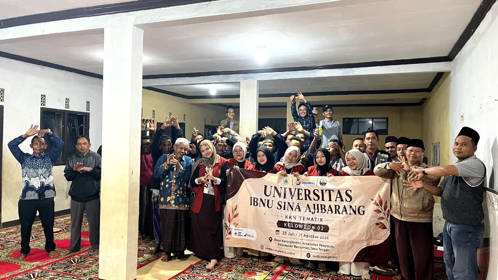
Sebagai upaya meningkatkan pengetahuan dan kesadaran masyarakat mengenai pentingnya pencegahan serta pengelolaan penyakit degeneratif, KKN Tematik Kelompok 02 Universitas Ibnu Sina Ajibarang menyelenggarakan Penyuluhan Penyakit Degeneratif pada 9 Agustus 2026 di Dusun Kalibungur, Desa Karangkemiri. Kegiatan ini ditujukan kepada masyarakat Dusun 4 sebagai bentuk edukasi kesehatan mengenai berbagai penyakit degeneratif yang umum terjadi serta faktor risiko, langkah pencegahan, dan pentingnya menerapkan pola hidup sehat.
Materi penyuluhan disampaikan oleh Feri Kanti Rahayu, M.Farm., yang merupakan dosen Universitas Ibnu Sina Ajibarang. Melalui penyampaian materi dan diskusi bersama, masyarakat mendapatkan pemahaman yang lebih baik mengenai upaya menjaga kesehatan, mengenali faktor risiko sejak dini, serta melakukan langkah-langkah pencegahan yang dapat diterapkan dalam kehidupan sehari-hari. Kegiatan ini diharapkan dapat meningkatkan kesadaran masyarakat untuk lebih peduli terhadap kesehatan dan mendorong terbentuknya pola hidup yang lebih sehat secara berkelanjutan.
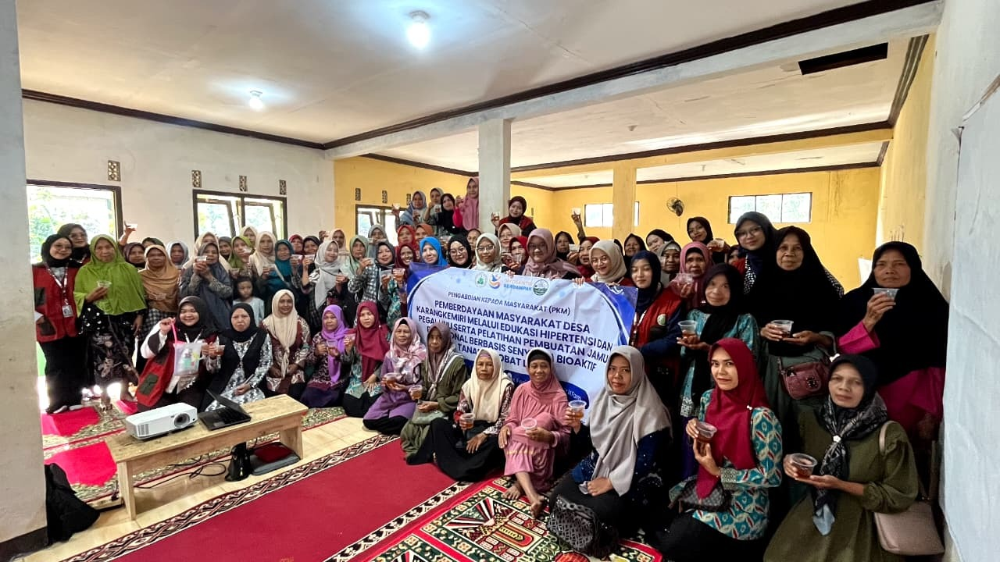
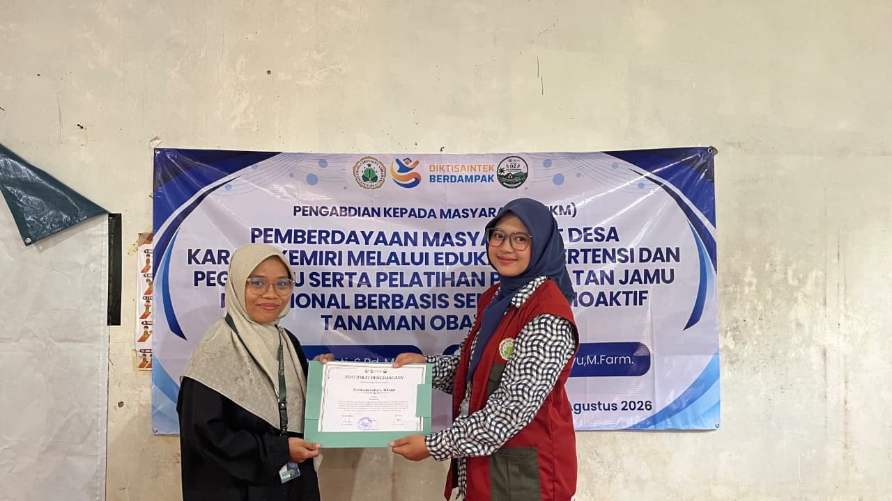
Sebagai upaya mengenalkan pemanfaatan tanaman obat yang tersedia di lingkungan sekitar, KKN Tematik Kelompok 02 Universitas Ibnu Sina Ajibarang melaksanakan program Herbal Inovatif Berbasis Kearifan Lokal (HERBALITA) pada 9 Agustus 2026 di Dusun Kalibungur, Desa Karangkemiri. Kegiatan ini ditujukan kepada ibu-ibu di Dusun 4 melalui edukasi dan praktik pembuatan jamu berbahan alami yang dapat dimanfaatkan sebagai bagian dari upaya menjaga kesehatan, khususnya untuk membantu memelihara kesehatan tubuh terkait hipertensi dan keluhan pegal linu.
Materi disampaikan oleh Indira Pipit Miranti, S.Pd., M.Sc., dosen Universitas Ibnu Sina Ajibarang. Peserta diperkenalkan pada berbagai tanaman dan bahan alami yang mudah ditemukan di sekitar lingkungan, sekaligus diberikan pemahaman mengenai cara pengolahan jamu yang tepat dan sederhana. Melalui program HERBALITA, diharapkan masyarakat dapat meningkatkan pengetahuan dan keterampilan dalam memanfaatkan potensi tanaman obat lokal secara bijak, sekaligus melestarikan kearifan lokal dalam pemanfaatan bahan alam untuk mendukung kesehatan keluarga.
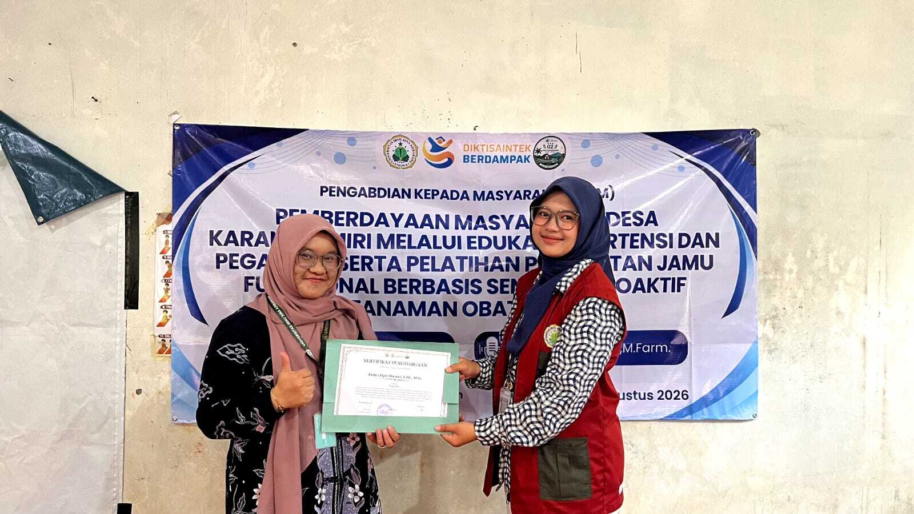
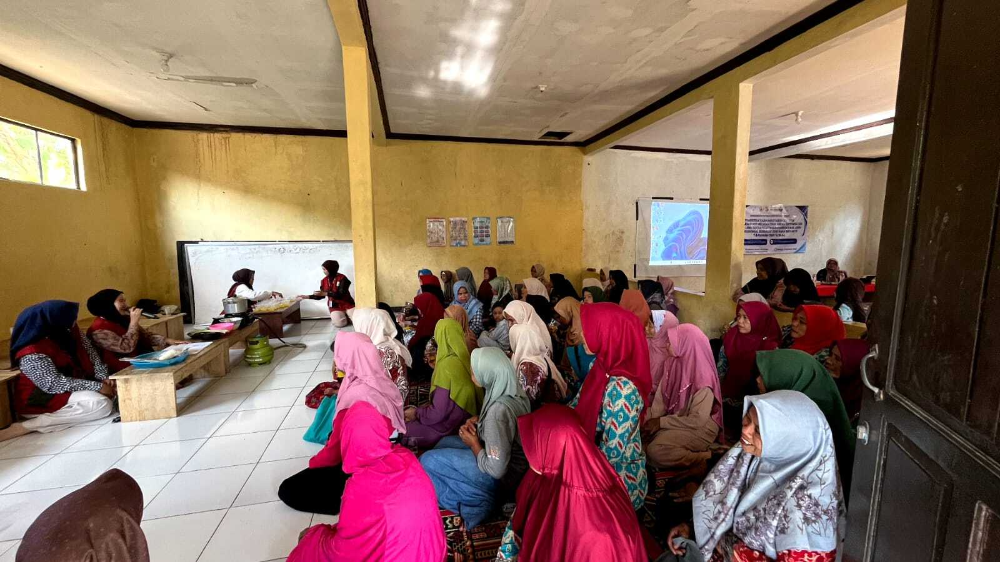
Sebagai upaya mengenalkan kebiasaan hidup sehat sejak usia dini, KKN Tematik Kelompok 02 Universitas Ibnu Sina Ajibarang melaksanakan program TK Sehat Ceria pada Selasa, 11 Agustus 2026 di KB Sindang Asih. iatan dikemas secara menyenangkan melalui pembelajaran, bernyanyi, dan bermain dengan materi mengenai cara mencuci tangan yang benar serta pengenalan makanan sehat dan tidak sehat. Anak-anak diajak memahami pentingnya menjaga kebersihan tangan dan memilih makanan yang baik untuk mendukung kesehatan dan tumbuh kembang.
Untuk memperkuat pemahaman, mahasiswa KKN menggunakan media edukatif berupa stiker bergambar berbagai jenis makanan. Anak-anak diminta mengelompokkan dan menempelkan gambar makanan pada kolom makanan sehat atau makanan tidak sehat sesuai dengan jenisnya. Melalui kegiatan yang interaktif dan menyenangkan ini, diharapkan anak-anak dapat mengenali kebiasaan hidup bersih serta membedakan makanan yang baik dan kurang baik bagi kesehatan sejak dini.
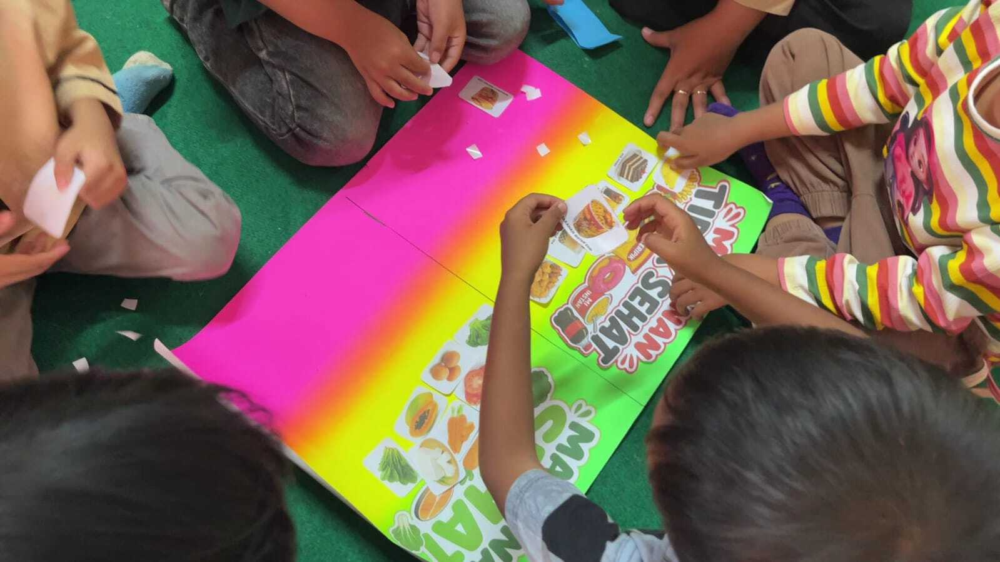
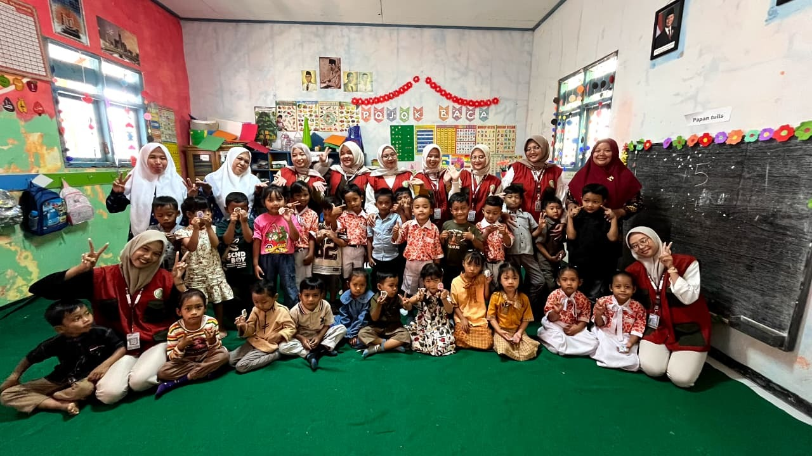
Sebagai upaya menyediakan informasi yang mudah diakses oleh masyarakat, KKN Tematik Kelompok 02 Universitas Ibnu Sina Ajibarang melaksanakan program Desa Info (Pusat Informasi dan Edukasi Desa) pada Kamis, 13 Agustus 2026 di Dusun Kalibungur, Desa Karangkemiri. Program ini diwujudkan melalui pemasangan banner informatif di depan TPQ Miftahul Jannah yang memuat informasi penting mengenai golongan obat, nomor-nomor darurat, serta tips menghadapi keadaan darurat.
Penyediaan informasi dalam bentuk visual ini diharapkan dapat menjadi media edukasi yang praktis dan mudah dipahami oleh masyarakat. Dengan ditempatkan di lokasi yang mudah terlihat dan sering dilalui warga, Desa Info diharapkan dapat membantu meningkatkan pengetahuan masyarakat mengenai penggunaan obat serta memberikan panduan awal yang dapat diingat dan diterapkan ketika menghadapi situasi darurat. Program ini menjadi salah satu bentuk kontribusi KKN dalam menghadirkan informasi yang bermanfaat dan mendukung terciptanya masyarakat yang lebih sadar, tanggap, dan siap menghadapi keadaan darurat.
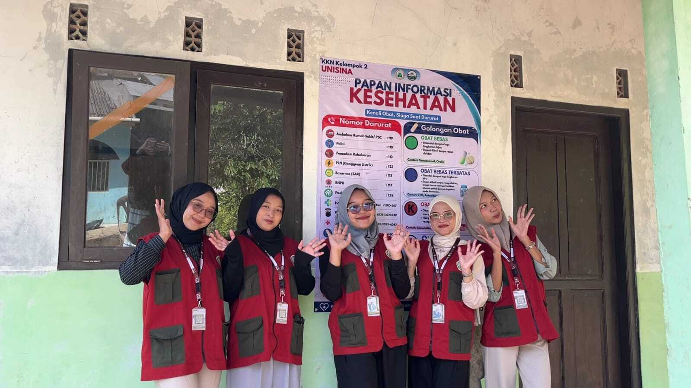
Kegiatan Kenang-Kenangan Desa dilaksanakan pada Sabtu, 22 Agustus 2026 pukul 21.00 WIB hingga selesai di Lapangan Voli RT 04 RW 05, Dusun 4 Kalibungur. Kegiatan ini menjadi salah satu rangkaian penutup KKN Tematik Kelompok 02 sekaligus bentuk apresiasi dan ungkapan terima kasih kepada Pemerintah Desa serta masyarakat Desa Karangkemiri atas dukungan, kerja sama, dan penerimaan selama pelaksanaan KKN.
Kegiatan dilakukan melalui pemberian plakat kenang-kenangan sebagai simbol kebersamaan serta penghargaan atas hubungan baik yang telah terjalin antara mahasiswa KKN dan masyarakat. Momen ini menjadi penanda berakhirnya rangkaian pengabdian sekaligus meninggalkan kenangan dan hubungan yang diharapkan tetap terjaga setelah kegiatan KKN selesai.
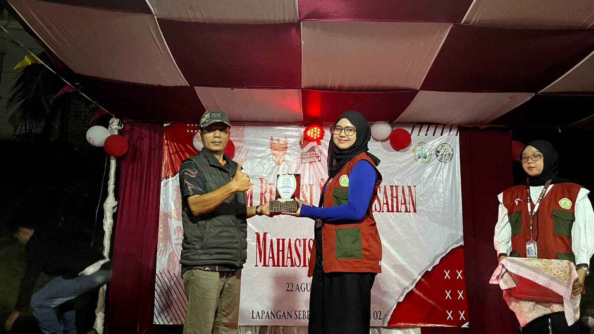
Sebagai bentuk kepedulian terhadap kesehatan dan kemanusiaan, KKN Tematik Kelompok 02 Universitas Ibnu Sina Ajibarang bekerja sama dengan KKN Tematik Kelompok 01 menyelenggarakan Event Donor Darah pada Selasa, 18 Agustus 2026 di Balai Desa Karangkemiri. Kegiatan ini terbuka untuk masyarakat umum sebagai wadah untuk berpartisipasi dalam aksi kemanusiaan melalui kegiatan donor darah.
Melalui kegiatan ini, masyarakat diajak untuk berkontribusi dalam membantu memenuhi kebutuhan ketersediaan darah sekaligus menumbuhkan kesadaran akan pentingnya kepedulian dan solidaritas terhadap sesama. Kolaborasi antara Kelompok 02 dan Kelompok 01 menjadi wujud nyata semangat kebersamaan dalam memberikan manfaat bagi masyarakat Desa Karangkemiri dan sekitarnya, sejalan dengan nilai DHARMAYASA.
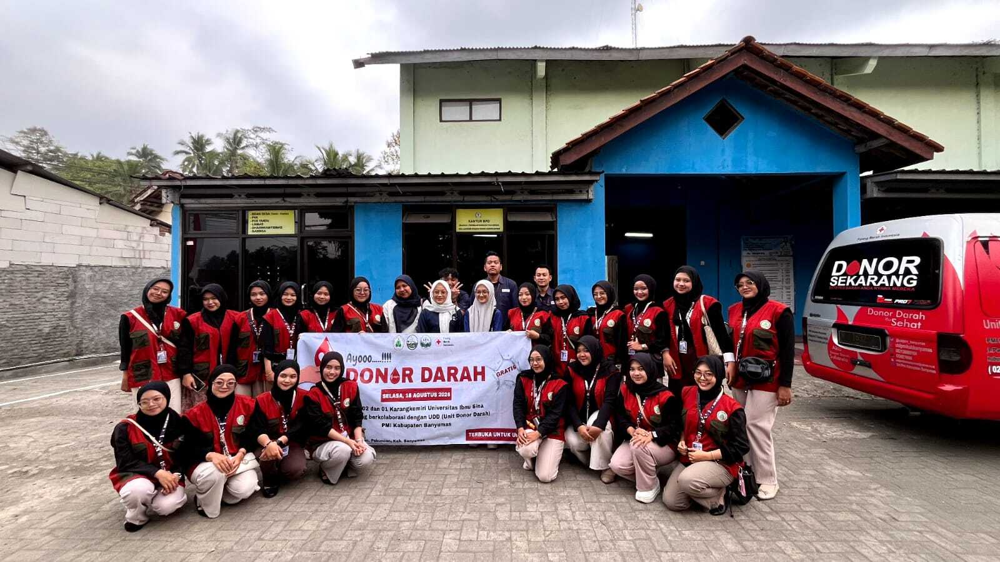
Program UMKM Naik Kelas dilaksanakan pada 22 Agustus 2026 di Posko KKN 02 Karangkemiri. Kegiatan ini bertujuan untuk meningkatkan visibilitas usaha dan jasa masyarakat Dusun 4 Kalibungur melalui pemanfaatan Google Maps, sehingga keberadaan usaha dapat lebih mudah ditemukan oleh masyarakat maupun pengguna dari luar wilayah.
Pelaksanaan kegiatan dilakukan melalui pendataan dan pengecekan usaha serta jasa yang terdapat di lingkungan Dusun 4 Kalibungur. Berdasarkan hasil pendataan, ditemukan satu warung yang belum terdaftar di Google Maps, sehingga mahasiswa KKN membantu mengajukan penambahan lokasi tersebut. Hingga saat ini, pengajuan masih dalam proses dan belum mendapatkan persetujuan dari Google Maps. Kegiatan ini menjadi salah satu upaya untuk mendukung digitalisasi usaha lokal serta meningkatkan aksesibilitas informasi mengenai potensi ekonomi masyarakat.
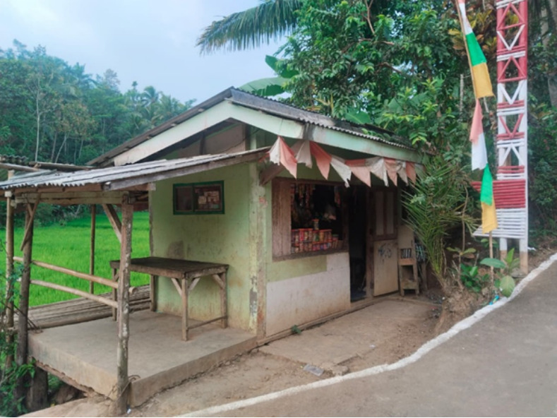
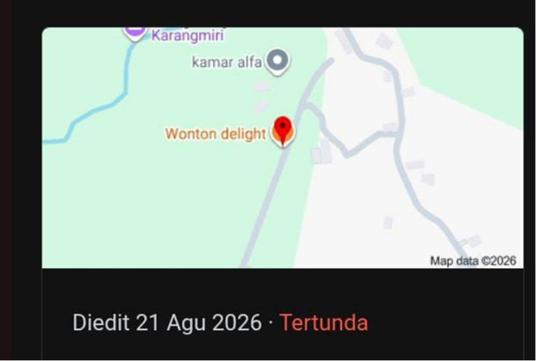
Sebagai upaya menumbuhkan kecintaan terhadap seni dan budaya sekaligus memberikan ruang bagi anak-anak untuk mengembangkan kreativitas dan kepercayaan diri, KKN Tematik Kelompok 02 Universitas Ibnu Sina Ajibarang melaksanakan program Gema Nusantara di RT 04, Dusun 4 Kalibungur, Desa Karangkemiri. Kegiatan ini berupa pendampingan dan pelatihan seni tari kepada anak-anak melalui proses belajar gerakan tari, latihan secara bertahap, serta membangun kekompakan dalam mempersiapkan penampilan.
Program Gema Nusantara dipersiapkan sebagai bagian dari rangkaian malam resepsi HUT ke-81 Kemerdekaan Republik Indonesia. Melalui kegiatan ini, anak-anak diberikan kesempatan untuk menampilkan hasil latihan di hadapan masyarakat sekaligus turut berpartisipasi dalam memeriahkan perayaan kemerdekaan. Diharapkan kegiatan ini dapat menjadi sarana untuk mengenalkan dan melestarikan seni budaya Nusantara, meningkatkan rasa percaya diri anak, serta mempererat kebersamaan antara mahasiswa KKN dan masyarakat melalui karya seni.
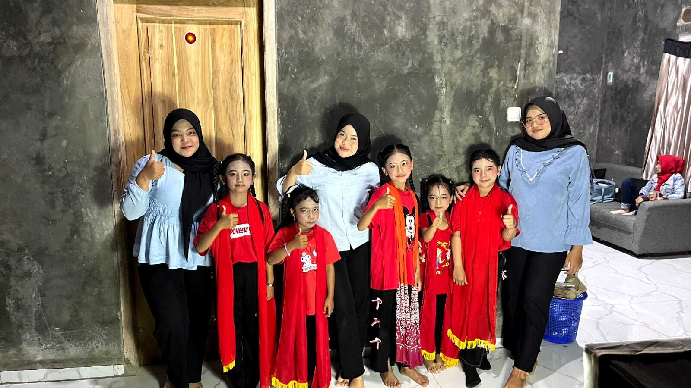
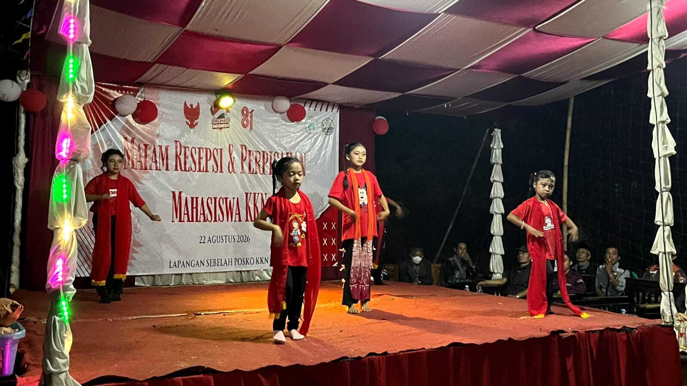
Sebagai upaya meningkatkan kesadaran masyarakat akan pentingnya aktivitas fisik dan pola hidup sehat, KKN Tematik Kelompok 02 Universitas Ibnu Sina Ajibarang melaksanakan program Gerak Bersama Desa Sehat (Senam) pada Minggu, 9 Agustus 2026 pukul 07.00 WIB di lapangan RT 04, Dusun 4 Kalibungur, Desa Karangkemiri. Kegiatan ini diikuti oleh masyarakat sebagai sarana untuk berolahraga bersama dalam suasana yang sehat, aktif, dan menyenangkan.
Melalui kegiatan senam bersama, masyarakat diajak untuk membiasakan aktivitas fisik secara rutin sebagai bagian dari upaya menjaga kebugaran dan kesehatan tubuh. Selain memberikan manfaat bagi kesehatan, kegiatan ini juga menjadi wadah untuk mempererat interaksi, kebersamaan, dan partisipasi masyarakat. Gerak Bersama Desa Sehat diharapkan dapat mendorong terbentuknya kebiasaan hidup aktif serta meningkatkan semangat masyarakat dalam menjaga kesehatan secara berkelanjutan.
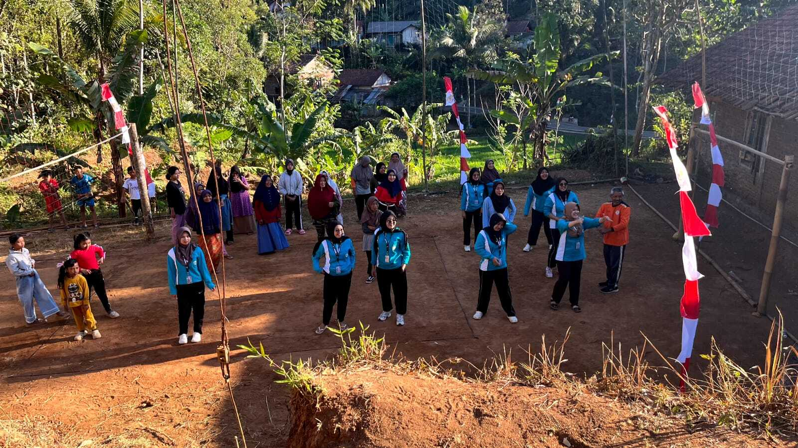
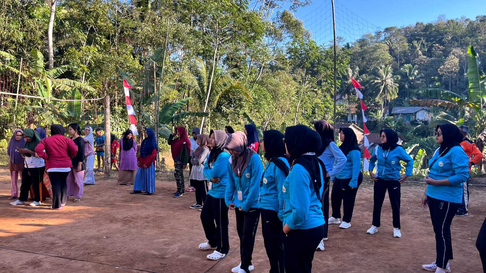
Sebagai upaya mendukung proses pembelajaran dan meningkatkan semangat belajar anak-anak, KKN Tematik Kelompok 02 Universitas Ibnu Sina Ajibarang menghadirkan program Rumah Belajar Cerdas bagi siswa tingkat SD hingga SMP di Dusun 4 Kalibungur, Desa Karangkemiri. Kegiatan ini dilaksanakan secara rutin setiap Senin–Kamis pukul 15.30–17.00 WIB dengan memanfaatkan posko KKN sebagai ruang belajar bersama. Anak-anak mendapatkan pendampingan dalam memahami materi pelajaran, mengerjakan tugas, serta belajar sesuai dengan kebutuhan masing-masing.
Selain menjadi tempat untuk belajar dan berdiskusi, Rumah Belajar Cerdas juga dirancang sebagai ruang yang nyaman bagi anak-anak untuk bertanya, berbagi pengetahuan, dan mengembangkan kemampuan akademiknya. Melalui pendampingan yang dilakukan secara interaktif dan menyenangkan, program ini diharapkan dapat membantu meningkatkan motivasi belajar, kemandirian, dan kepercayaan diri anak-anak dalam mengikuti proses pendidikan.
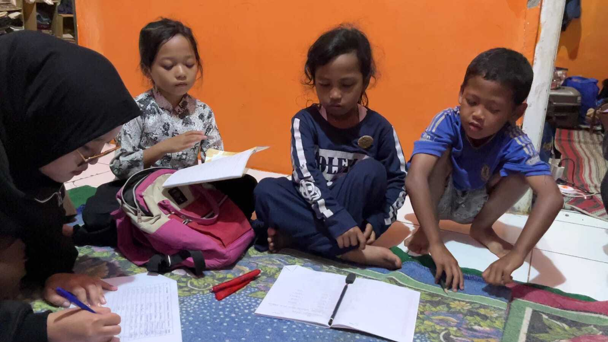
Sebagai upaya menanamkan kebiasaan hidup bersih dan sehat sejak usia dini, KKN Tematik Kelompok 02 Universitas Ibnu Sina Ajibarang melaksanakan kegiatan Edukasi Perilaku Hidup Bersih dan Sehat (PHBS) pada 3 Agustus 2026 pukul 10.00–11.00 WIB di SD Negeri 03 Karangkemiri. Kegiatan ini ditujukan kepada siswa kelas 1 sebagai peserta utama dengan materi mengenai pentingnya menjaga kebersihan diri melalui cuci tangan pakai sabun dan sikat gigi yang benar.
Kegiatan dikemas secara interaktif dan menyenangkan agar mudah dipahami oleh anak-anak. Siswa diperkenalkan pada langkah-langkah mencuci tangan menggunakan sabun serta cara menyikat gigi yang tepat, disertai praktik secara langsung. Melalui kegiatan ini, diharapkan siswa dapat memahami pentingnya menjaga kebersihan diri dan membiasakan perilaku hidup bersih dan sehat dalam kehidupan sehari-hari, baik di lingkungan sekolah maupun di rumah.
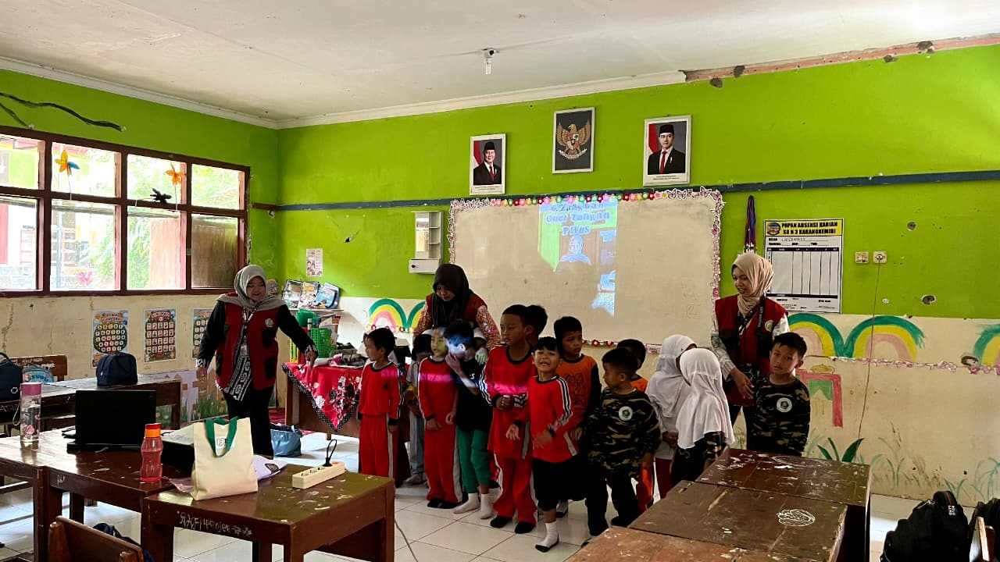
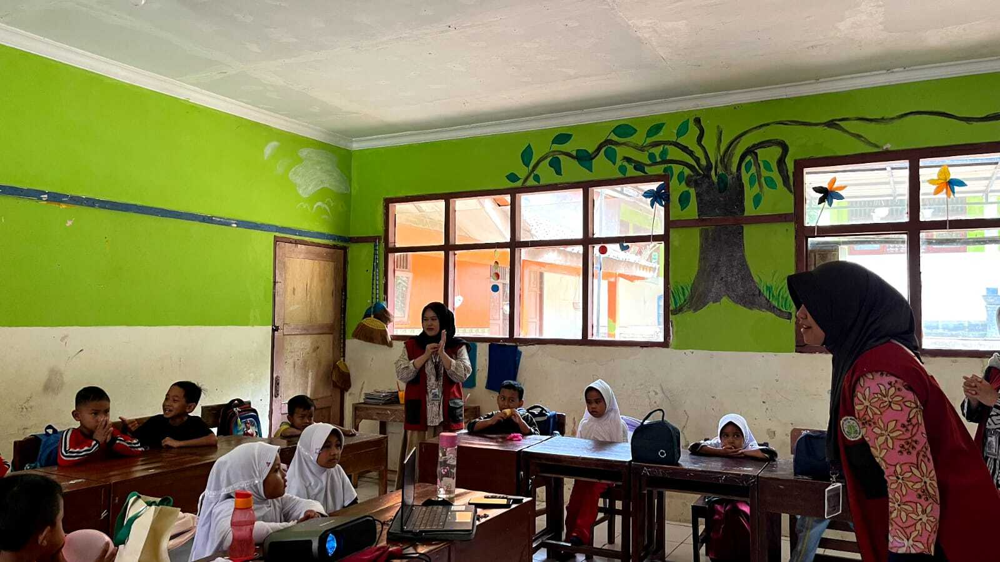
Sebagai bentuk kepedulian terhadap kesehatan masyarakat, KKN Tematik Kelompok 02 Universitas Ibnu Sina Ajibarang menyediakan layanan Cek Kesehatan di Posko pada 26, 27, 28 Juli dan 5 Agustus 2026. Kegiatan ini dilaksanakan di Posko KKN Dusun Kalibungur dan terbuka bagi masyarakat yang ingin melakukan pemeriksaan kesehatan dasar, khususnya pemeriksaan tekanan darah (tensi). Seluruh layanan pemeriksaan diberikan secara gratis sebagai bentuk kontribusi mahasiswa dalam mendukung akses masyarakat terhadap pemeriksaan kesehatan sederhana.
Selain pemeriksaan tekanan darah, masyarakat juga memperoleh edukasi mengenai pentingnya menjaga pola hidup sehat dan melakukan pemeriksaan kesehatan secara rutin. Antusiasme dan respons positif masyarakat menunjukkan adanya kepedulian terhadap kondisi kesehatan serta pentingnya pemantauan kesehatan secara berkala. Melalui kegiatan ini, diharapkan masyarakat semakin sadar untuk menjaga kesehatan dan melakukan pemeriksaan secara rutin sebagai langkah deteksi dini terhadap gangguan kesehatan.
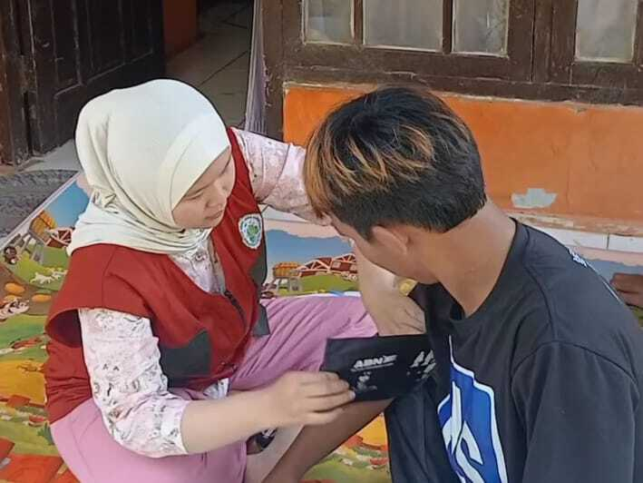
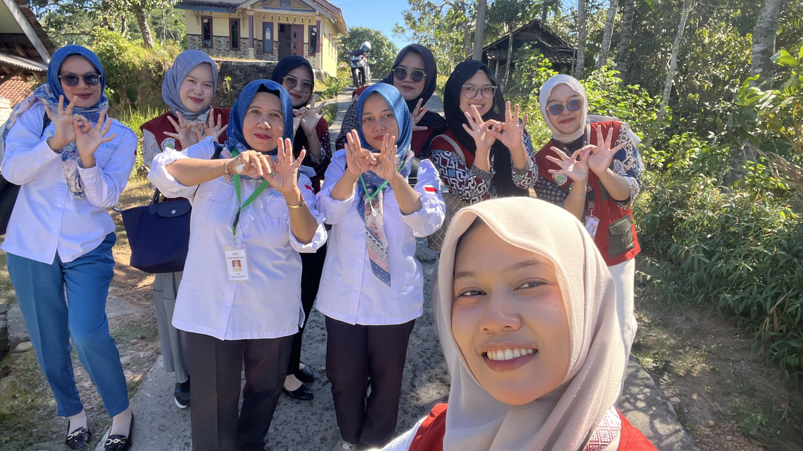
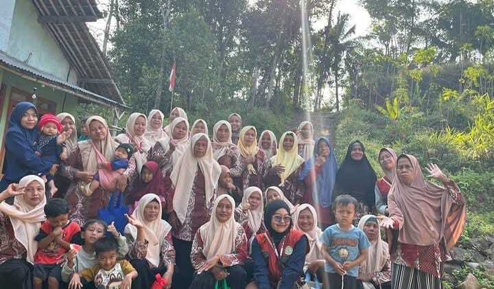
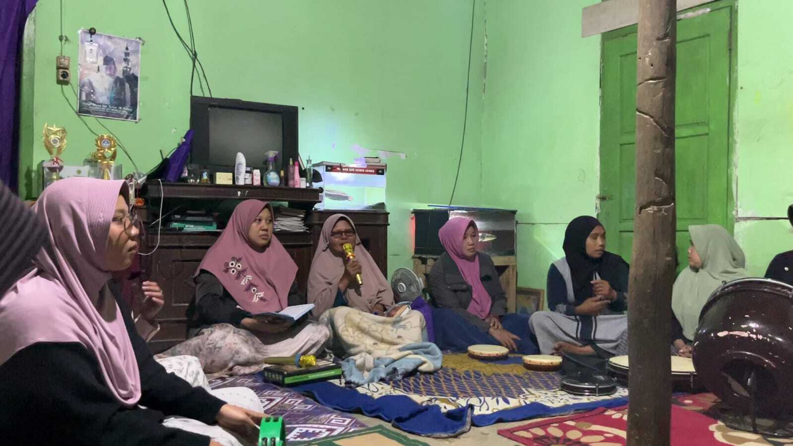
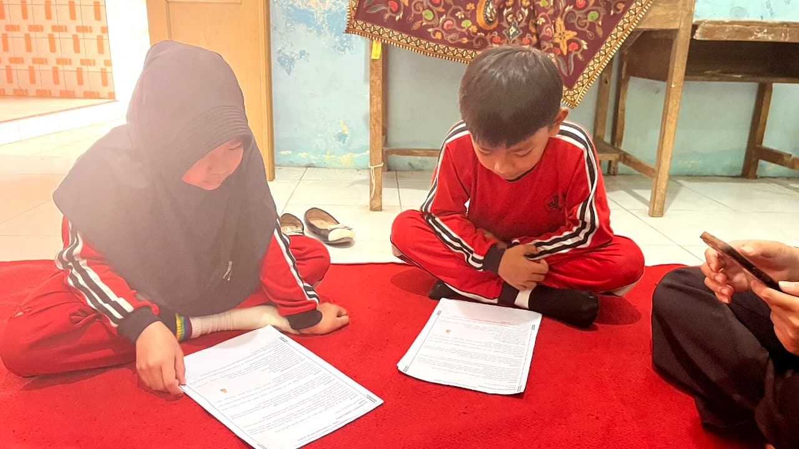
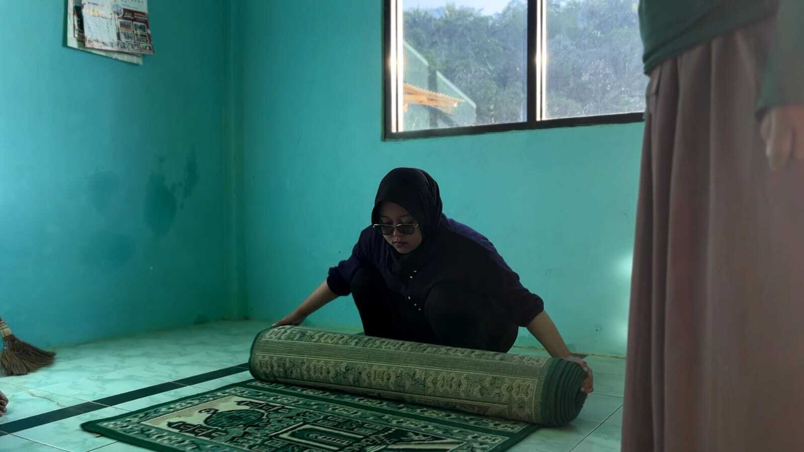
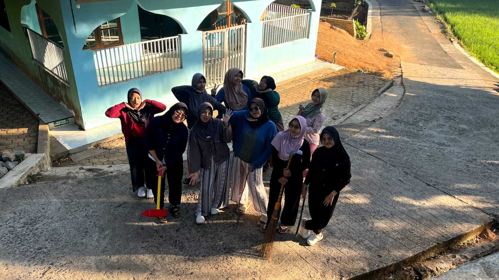
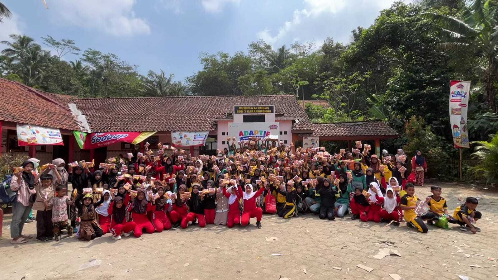
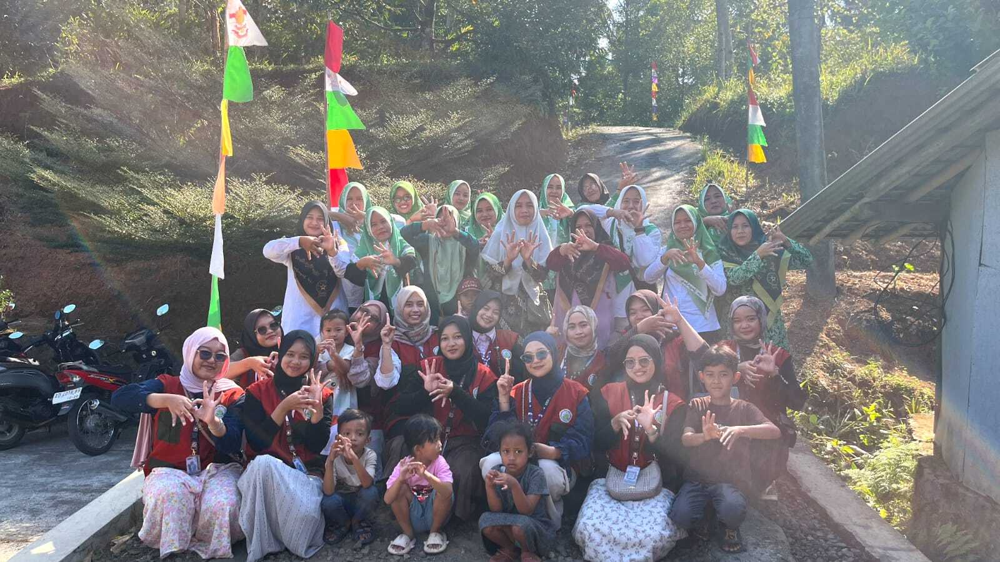
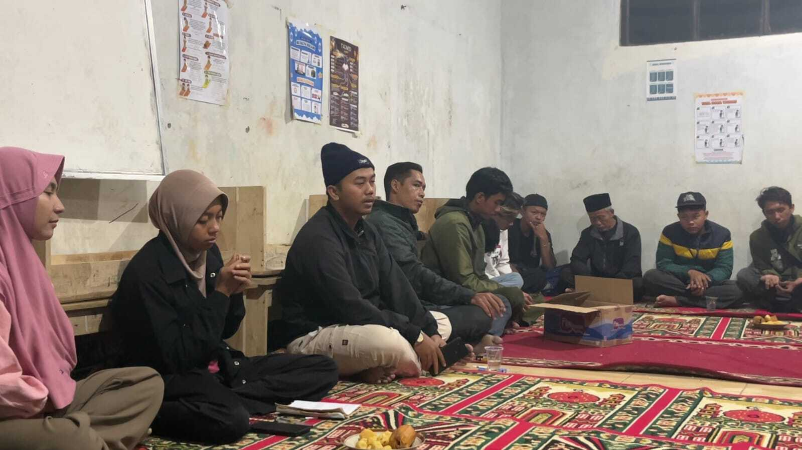
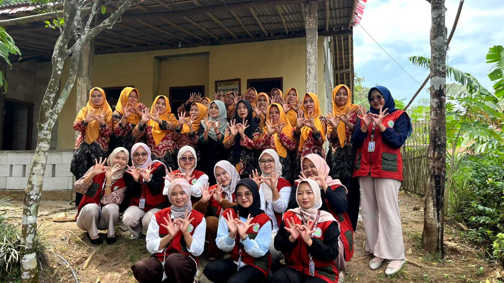
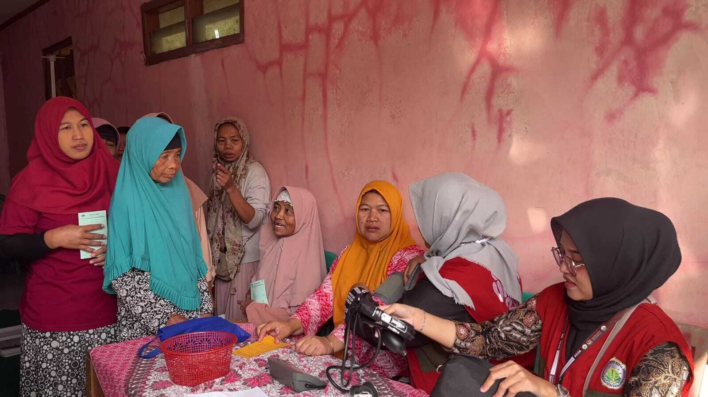
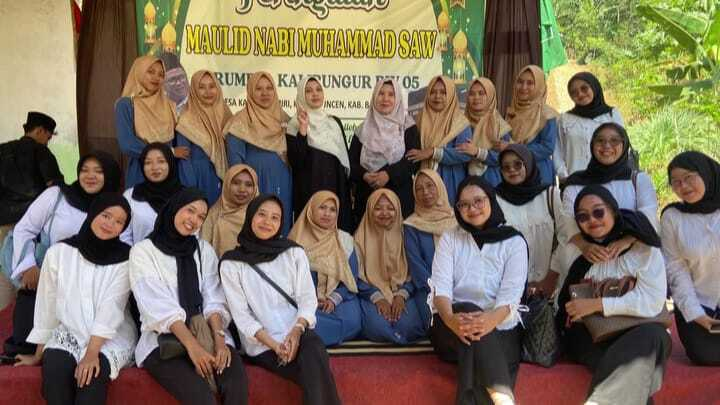
Kenalan dengan orang-orang di balik setiap cerita, karya, dan langkah kecil KKN Tematik Kelompok 02.
Sebuah cerita mungkin selesai,
tapi kenangannya akan selalu tinggal.
Desa yang selalu di hati ♡
Bersama dalam setiap langkah ♡
Indahnya sederhana di Kalibungur ♡
Tawa yang tak terlupakan ♡
Terima kasih, Kalibungur ♡
KKN bukan akhir, tapi awal dari cerita lain ♡
35 hari mungkin terdengar singkat, tapi cukup untuk meninggalkan banyak cerita, tawa, pengalaman, dan kenangan yang akan selalu kami ingat.
Terima kasih kepada Pemerintah Desa Karangkemiri dan seluruh masyarakat Dusun Kalibungur yang sudah menerima, membantu, dan membersamai kami selama menjalankan KKN.
Terima kasih untuk setiap senyum, sapaan, bantuan, dan kebersamaan yang kami dapatkan. Semoga apa yang kami bawa dan tinggalkan selama KKN bisa memberikan sedikit manfaat bagi desa.
Sampai bertemu di cerita lainnya.
KKN Tematik Kelompok 02 — 2026 ♡
“Bersama Desa, Mewujudkan Cita.”